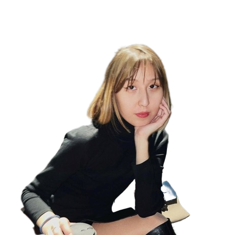
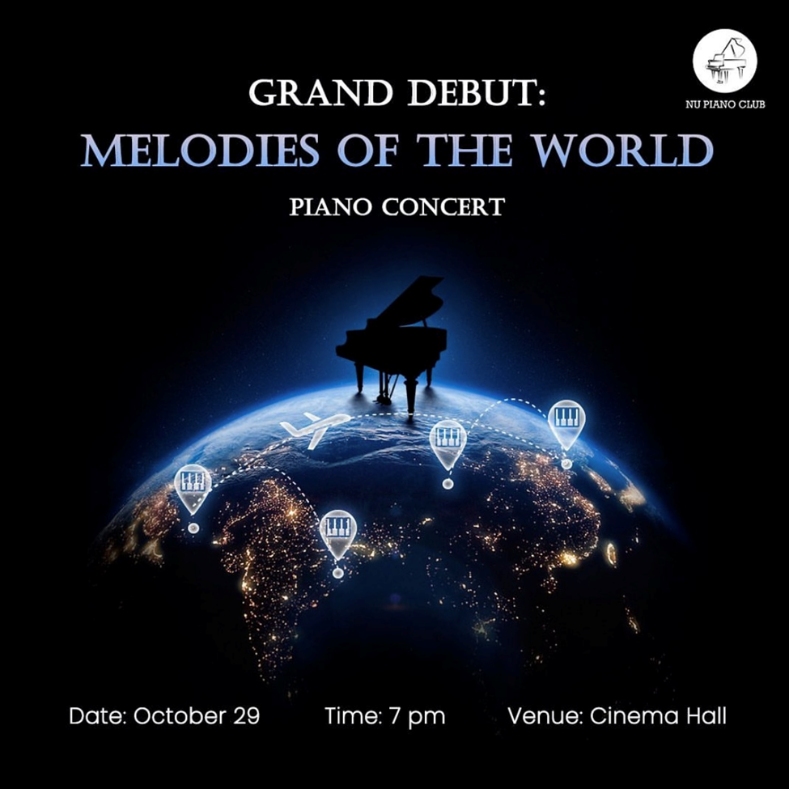
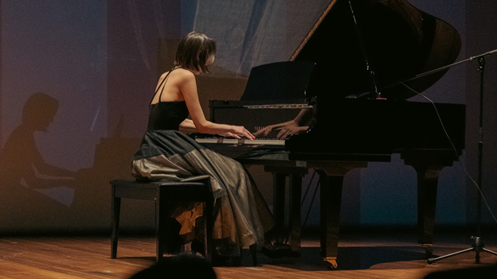
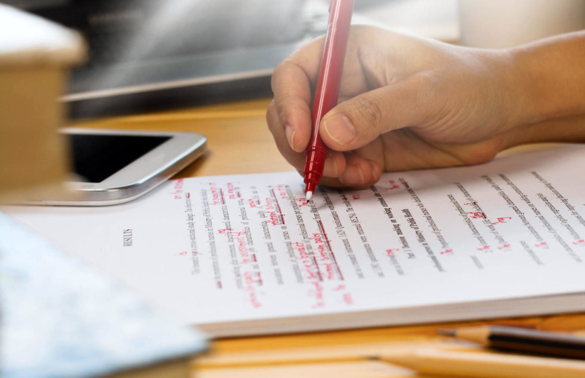

HI!
My name
is
Dariga Bulat
Academic life
Nazarbayev University, School of Science and Humanities, Bachelor of Arts in Economics, August 2019 - present
Expected graduation date - June 2023 cGPA: 3.35 Credits earned: 262

Personal skills
Member of @nu_pianoclub, August 2022 - present
Performed on 2 Piano Club concerts. Huge fan of classical music, performed Fantasie Impromptu and Nocturne in C# minor by Chopin in concerts.

About my hobby
"Never thought something my mom pushed me to do when I was 8 years old would become a thing I can’t imagine myself without. Piano for me is just like my best friend’s phone number whom I can call anytime, but instead of supportive words, it would give me a melody that would calm me (or maybe make me feel more blue)."

Courses taken during NU that I encourage everyone to take
WCS 260: Creative Writing: Introduction to Fiction Writing I
you will read a bunch of cool stories, and analyze choices that the authors of the stories made.
you will write a bunch of cool stories yourself; it will be extremely fun to come up with fictional characters and create fictional problems for them.